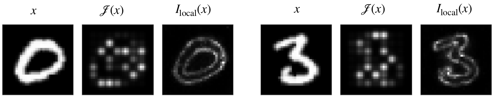
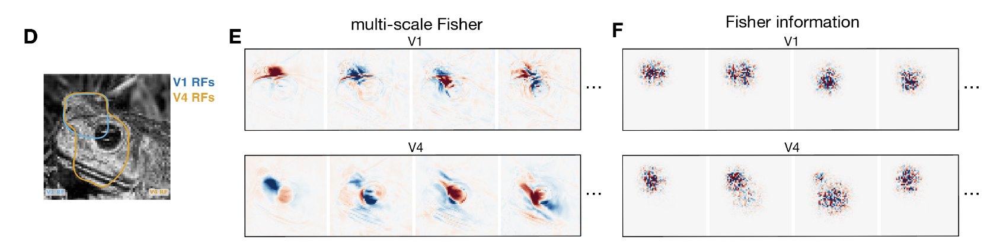

Current methods · NeurIPS 2025 and NeurIPS 2026 (oral)
Measuring what neural networks encode
Which inputs and features contribute to the information that a neural population represents?


Problem
Mutual information measures how much a population encodes, not what it encodes. Splitting it into contributions from individual stimuli or features is ill-posed: infinitely many decompositions are possible, existing ones behave in qualitatively different ways, and most do not scale to high-dimensional stimuli.
What we did
We stated axioms that a meaningful decomposition must satisfy, including additivity, positivity and locality, showed that existing decompositions violate at least one, and derived a decomposition that satisfies them all. It generalises Fisher information from infinitesimal to finite stimulus changes, splits further across features such as pixels, and is estimated with diffusion models, so it scales to naturalistic images.
We then showed that a unique multi-scale information geometry follows from first principles. It is exactly related to mutual information: it stretches well-encoded stimulus directions and contracts poorly encoded ones.
What changed
Information can now be attributed to individual stimuli and features with explicit guarantees. On recordings from macaque V1 and V4, the leading directions of the geometry were interpretable, differed between areas and agreed across encoding models (Inception and ResNet). Those of Fisher information depended more on the encoding model than on the data, and became interpretable only with a much simpler, less predictive model.
Why it matters for AI
The methods apply to any encoder, biological or artificial. They give a principled way to ask which inputs and features contribute to the information a network represents, and they stay interpretable for high-performing deep networks.
My contribution
Co-first author (equal contribution) of the NeurIPS 2025 paper and co-author of the NeurIPS 2026 oral. I developed multigeom, the Python package that implements the geometry and reproduces the paper's analyses.